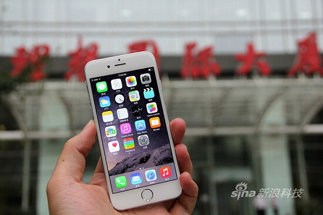
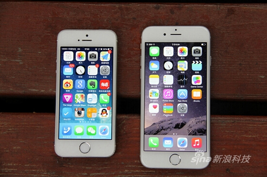
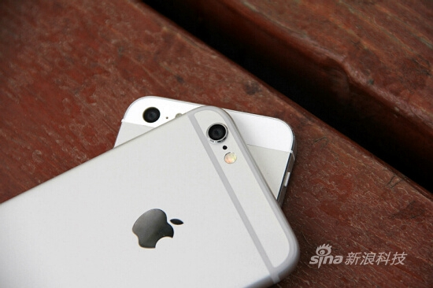
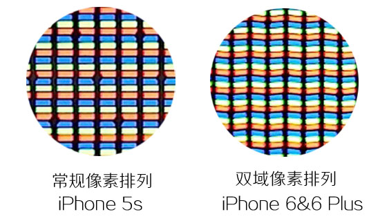
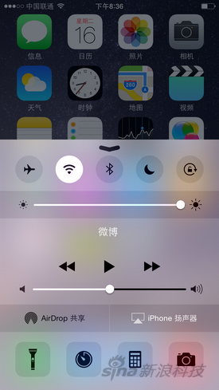
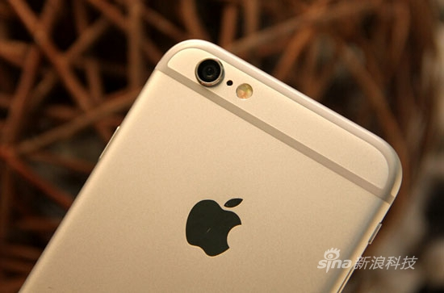
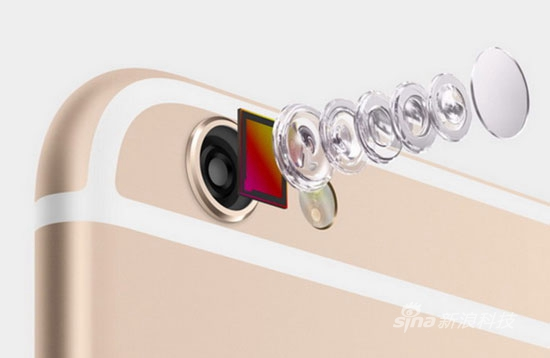
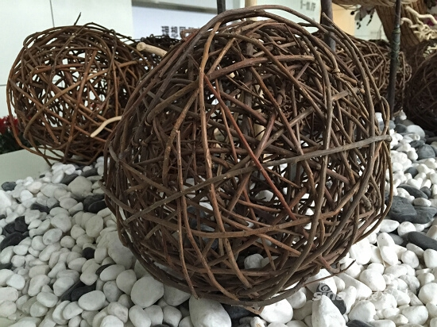

Since the iPhone 3G, Apple has basically maintained a pace of major innovation every two years. So this September, we saw the larger-screen, newly designed iPhone 6 and iPhone 6 Plus. On the inside, Apple added a newer A8 processor, M8 motion coprocessor, and NFC functionality for Apple Pay mobile payments.

It can be said that compared to the change from iPhone 5 to 5s, this iPhone 6 is a major upgrade. From Sina Mobile's live coverage on the night of the launch event, it was also clear to see people's attention on the iPhone 6.
Before the official release, the retail version of the 4.7-inch iPhone 6 had already arrived at Sina Mobile. We'll tell you about its actual user experience.
"Slim and compact" body:
Compared to all previous iPhones, the iPhone 6 has finally become wider, and it is also longer than the 5 and 5s, so the screen has increased to 4.7 inches. Since current Android phones are mostly 5 inches or larger, after surveying 30 colleagues, the vast majority felt that the 4.7-inch iPhone 6's body size was acceptable and not too big after seeing the actual device.

Right after getting the iPhone 6, almost everyone said the same thing: "Too light, too thin." This 6.9mm-thick phone is indeed surprising, and it maintains a weight of 129 grams. The body can be described as "slim." Once you get used to its thinness, the feel in hand is quite comfortable.


The iPhone 6's unibody construction is very good. The curved polished glass covering the screen makes the iPhone 6 smooth and rounded, and the connection between the screen and the curved metal frame is also very natural, which greatly helps improve the feel. Achieving such overall beauty and texture with glass and metal is perhaps something only Apple can do. Moreover, this screen design gives the displayed content a refined sense of "floating" on the surface of the device when the screen is lit.

Since the body has become longer, the side volume buttons have been extended for easier operation, and the power button has been moved to the right side of the device, which may take some getting used to. On our unit, the volume buttons, power button, and Home button all feel a bit stiff. Meanwhile, for one-handed operation, a new "Reachability" feature has been added: double-tapping the Touch ID area brings the screen down into one-handed mode.

The back of the device is entirely made of anodized metal, except the band areas at the top and bottom used to cover the antennas, which are a bit wide. On our white unit, the gray band areas on the back already look somewhat突兀. Based on hands-on experience with all three models at the launch event, the gold version looks even more突兀, while the space gray is relatively the most natural. That said, gold will still likely be the choice of most Chinese consumers.


This band area, along with the protruding camera, has become two of the iPhone 6's most criticized hotspots. These are also Apple's compromises for the iPhone 6's cellular signal and camera performance.
Screen detail improvements:
At the September 10 launch event, Apple CEO Cook announced the release of two iPhones at the very beginning, almost identical to previously leaked appearance and specs. Perhaps the only surprise was that both iPhones arrived at once: one with a 4.7-inch screen, the other 5.5 inches. The one that came to Sina Mobile today is the 4.7-inch version. The screen is larger than the previous generation (iPhone 5s, 4-inch screen, 1136x640 pixels), and the resolution has also improved, though in terms of pixel density, the 4.7-inch 1334x750 pixel 326PPI is the same as the 5s.
The slogan for the iPhone 6 on Apple's official website is "Bigger than bigger." What Apple wants to express is the improvement of this generation of iPhone in every aspect, and the most obvious and noticeable point is the increase in screen area.
In the past two years, Android manufacturers have been putting effort into hardware. After the iPhone 4, Apple no longer had an advantage in phone screen size and resolution (pixel density) specs, but 326PPI has already reached the threshold of the human eye. Without a magnifying glass, the difference in sharpness between the 4.7-inch iPhone 6's 326PPI and a 1080P screen's 441PPI is not that obvious.


PPI affects sharpness, but it has already exceeded the resolving power of the naked eye. Other factors can have a more noticeable impact on the screen's perceived quality, so Apple used other methods to enhance the sensory experience on the iPhone 6's screen.
The screens of the iPhone 6 and iPhone 6 Plus are described by Apple as "a new Retina HD display with larger size and higher resolution." The specific advantages can be summed up as: higher contrast, wider viewing angles, more true-to-life colors, and the addition of a polarizer.
Higher contrast: Apple uses a photo-alignment technology that uses ultraviolet light to control the position of liquid crystals in the display, making them align more precisely where they should be. This makes blacks deeper and text sharper and crisper, thereby improving the visual experience.
Wider viewing angles: At the launch event, when introducing the iPhone 6 screen, Apple mentioned "dual domain pixels" but did not elaborate much. This technology is actually not new. LG mentioned it when launching AH-IPS display technology in 2011, and both the HTC One X in 2012 and the HTC One in 2013 used this technology. Unlike conventional LCD pixels, dual domain pixels mean the pixel electrodes are not all aligned; their arrangement is twisted. The "tilted" sub-pixels can perform better under uneven light sources, aiming for better viewing angles.

More true-to-life colors: Recently, phone makers like to talk about the quality of phone screens in terms of "Color Gamut" coverage. The iPhone 6 covers the full sRGB color standard, but many phones can achieve this standard. The Samsung S5 with a Super AMOLED screen can even reach 137% in professional mode. The significance of this spec is already limited.
So let's talk about actual experience. Comparing the iPhone 6 with the iPhone 5s, the actual result is that the color difference is minimal. Even when photographing the screens, you can barely tell the difference unless you get very close.

Polarizer: According to Apple's official website, "There will be times when you need to use it in the sun." If you currently have an iPhone 5s, wearing sunglasses will cause the screen brightness to drop significantly, affecting visibility. So Apple added a polarizer (coating layer) between the LCD display and the cover glass. A more common explanation: it works like blinds, capable of blocking and transmitting light, allowing the screen to be seen clearly even when wearing sunglasses.

In terms of actual usage experience, when both the iPhone 6 and 5s are set to maximum screen brightness on the same interface, wearing sunglasses makes the iPhone 6 look slightly clearer than the 5s or 5c. With polarized sunglasses, the 5s shows a layer of rainbow-like glare like soap bubbles, but the iPhone 6 does not.

This is the effect of the polarizer. It is an optimization Apple made to improve the screen experience in the specific usage scenario of wearing sunglasses. Compared to the previous points, the effect of the polarizer is actually more noticeable.
In addition to the LCD itself, Apple also improved the outer layer of the screen. They added 2.5D curved glass to the iPhone for the first time, a design previously used on the Nokia N9. The iPhone 6's UI interactions do not include gestures like "swiping in from outside the screen," but the curved glass is undoubtedly more comfortable to the touch than the previous flat glass. So the function of the curved glass is more about improving feel rather than functionality, but it does bring an enhancement to the user experience of this phone.
Hardware and performance:
The iPhone 6 uses a 20nm process 1.4GHz dual-core 64-bit A8 CPU and M8 motion coprocessor. This time, Apple's official website still compares performance with the original iPhone, showing that the performance improvement over the 5s is not revolutionary.

Using GeekBench, it can be seen that the RAM is still 1GB. The test scores for single-core and multi-core are 1630 and 2921, respectively. Compared to the iPhone 5s's A7 processor scores of 1383 single-core and 2541 multi-core, the single-core improvement is 17.86%, and the multi-core improvement is 14.95%.
 But behind the data, the A8 processor includes a new video encoder and image signal processor, which can support camera and video functions. At the same time, Apple's new Metal engine can fully leverage the graphics performance of the A8 processor and iOS 8. We believe that as Metal games increase, the performance advantages of the iPhone 6 will become more obvious.
But behind the data, the A8 processor includes a new video encoder and image signal processor, which can support camera and video functions. At the same time, Apple's new Metal engine can fully leverage the graphics performance of the A8 processor and iOS 8. We believe that as Metal games increase, the performance advantages of the iPhone 6 will become more obvious.
Network standards:
The model we tested this time is a retail version iPhone 6 A1586 from a certain country. Based on the network standards list supported on Apple's official website, it can be described as "universal connectivity":
CDMA EV-DO Rev. A (800, 1700/2100, 1900, 2100 MHz)
UMTS (WCDMA)/HSPA+/DC-HSDPA (850, 900, 1700/2100, 1900, 2100 MHz)
TD-SCDMA 1900 (F)， 2000 (A)
GSM/EDGE (850, 900, 1800, 1900 MHz)
FDD-LTE (Bands 1, 2, 3, 4, 5, 7, 8, 13, 17, 18, 19, 20, 25, 26, 28, 29)
TD-LTE (Bands 38, 39, 40, 41)
After actual testing, this A1586 supports China Unicom 4G (unable to tell whether it was connected to TD-LTE or FDD-LTE), China Mobile 4G. With a China Telecom UIM card inserted, it briefly showed "China Telecom 1X" and then displayed "No Service" and could not be recognized. However, please refer to the official versions for each region when they are formally released.


Special system features:
At the launch event, Apple spent a large portion of time explaining its mobile payment feature, Apple Pay. It is a combination of software and hardware, and it can only be realized once the payment environment is mature. But on the iPhone 6, apart from the credit card logo added to the Passbook icon, users can't feel much difference. This includes the NFC feature added to the iPhone 6; you won't find an NFC switch in the system or Control Center, which is very different from current Android phones.
We believe that even with NFC, because it involves critical issues like payments, Apple will not open up the port. So netizens hoping that the iPhone 6 can transfer data via NFC just by tapping phones together like Android phones can put that thought aside for now. Apple has its own AirDrop, which is their wireless transfer solution.


Another point is one-handed operation. With a larger screen, the thumb inevitably cannot reach the "Back" button on the opposite corner of the screen. So Apple added the "Reachability" option in the system's accessibility features. After enabling it, lightly double-tap the Home button (no need to press it down), and the screen slides down by one-third, leaving enough area for one-handed operation. After about ten seconds of no operation, it automatically restores to full screen. In fact, this feature has long existed in some Android phones, but it seems a bit smoother on the iPhone. However, this feature is not perfect; for example, it also works on the dial pad, where you can input numbers but cannot reach the call button.


App adaptation issues:
From iPhone 3GS to iPhone 4, and later iPhone 5, every change in iOS screen resolution has caused short-term app incompatibility. This time is no different. In many apps on the 4.7-inch iPhone 6, fonts can appear slightly blurry, but it does not affect usage.
Think back to the leap from iPhone 4s to 5, where many apps had black bars at the top and bottom. But the advantage of the iOS ecosystem lies in its ability to follow up quickly. I believe developers will not take much time to solve the incompatibility issues.

Camera: Compared with iPhone 5s, the improvement is not obvious
This time the iPhone 6 did not increase the pixel count as rumored, and still "stubbornly" uses 8 megapixels. It is not yet certain whether it still uses Sony's IMX145 sensor, with a single pixel area of 1.5 microns. The aperture, like the iPhone 5s, remains f/2.2.
And because the overall thickness of the iPhone 6 body has decreased, the lens module protrudes from the back. To protect the lens, the lens is wrapped with a taller stainless steel ring. This can be said to be the first iPhone with a protruding lens. Since 2007, this has also been a compromise forced by body thickness.

However, this time the iPhone 6 uses a new sensor supporting Focus Pixels. The so-called "Focus Pixels" is what is commonly known as "phase detection autofocus," which is compared with traditional contrast detection autofocus. The official claim is that the iPhone 6 with phase detection autofocus focusing is twice as fast as the iPhone 5s.

Contrast detection autofocus works by comparing the changes in contrast of the picture at the focus point. When the contrast is at its maximum, that is the position of accurate focus. Therefore, during focusing, multiple attempts are needed; the picture gradually becomes clearer, and the contrast gradually increases. When the in-focus state is already reached, the camera does not stop but continues moving the lens. Then, when it finds that the contrast begins to drop and realizes the peak has been passed, it knows it has missed the in-focus state, and thus returns to the highest contrast position to complete focusing.
Phase detection autofocus, on the other hand, can directly determine the focus position through the signal detected by phase detection from the very beginning. It can directly know whether the current position is in front of or behind the focus point, and then tell the lens how to move. When in the in-focus state, it also clearly indicates this, so it saves the back-and-forth contrast detection process of contrast autofocus, greatly improving focusing speed.
However, unlike the iPhone 6 Plus, the 4.7-inch iPhone 6 does not include an optical image stabilization system. It still uses the same automatic image stabilization as the iPhone 5s, which rapidly takes four photos in succession and intelligently fuses them into one, thereby reducing blur caused by body shake and moving objects. Therefore, it is naturally slightly inferior to the iPhone 6 Plus, which uses a physical optical image stabilization system. The latter relies on the lens moving in the opposite direction to compensate for the physical movement from hand shake, keeping the image stable.
In terms of actual photo quality, after comparing several photos, we found no obvious difference between the iPhone 6 and iPhone 5s. Whether in color reproduction or sharpness, they are almost identical. However, in night shots, we could see that the brightness of the iPhone 6 improves to a certain extent, and color noise in low-light areas is reduced.


Thanks to the new sensor supporting Focus Pixels, the focusing speed of the iPhone 6 has indeed improved significantly, but it has not reached the twice-as-fast level Apple claimed. When tapping to focus at the same time, the iPhone 5s is still zooming in and out to focus, while the iPhone 6 has already focused accurately. This change is especially obvious in burst shooting.
Another point to emphasize is that the front camera of the iPhone 6 has a larger aperture this time, increased from f/2.4 to f/2.2. Combined with the new sensor technology, it can capture up to 81% more light. In iOS 8, a manual exposure compensation slider has been added. You only need to touch the screen and then slide up or down to adjust the exposure compensation to get an image with appropriate brightness.
 Newly added in iOS 8Manual exposure compensation slider
Newly added in iOS 8Manual exposure compensation slider



Editorial opinion:
Zang Zhiyuan:
The iPhone screen has finally gotten bigger! iOS finally offers the 4.7-inch iPhone 6 option, along with the even larger 5.5-inch iPhone 6 Plus. In appearance, the compromises of the antenna lines on the back and the protruding camera cannot overshadow the brilliance of the "slim and tight" body made of metal and glass.
Sales of the iPhone 6 series are still not a problem this time. Many people are really struggling with whether to buy the 4.7-inch or the 5.5-inch. The 5.5-inch Plus performs better in battery, optical image stabilization, and screen resolution. Personally, I think the 4.7-inch is more suitable for carrying and using on a daily basis, while the 5.5-inch is more suitable for consumers who prefer extra-large screen phones. I hope it will be available in Mainland China as soon as possible.
In addition, it is worth mentioning that no NFC-related functions, such as image transfer, can be found in the system, and Apple Pay also has no menu. Apple has used NFC in its own way. After communication following the US press conference, we learned that Apple has already started contacting relevant Chinese institutions. I hope Apple Pay can be put into use in Mainland China as soon as possible.
He Jin:
There is no denying that when the iPhone screen becomes larger, it will bring Apple record orders and unprecedented attention. However, I still believe the iPhone 6 is hard-pressed to have a killer feature that strikes a chord. This feeling became even stronger from watching the press conference to handling the real device.
This habitual hardware upgrade seems to be reflected only in the processor this time. And on the iPhone 5s, where there is no smoothness problem at all, the advantages of the iPhone 6 are hard to find in the experience. Moreover, the parallel transfer of fingerprint recognition and photography makes the highlights of this phone countable on one hand.
When it comes to phones, I must be a member of the "looks over everything" club. The front of the iPhone 6 is almost flawless, but the thick cut antennas on the back and the protruding camera are truly hard to ignore.
In short, the 4.7-inch screen of the iPhone 6 did not give me the same excitement that the iPhone 5s's Touch ID gave me back then. Maybe after the Apple Pay ecosystem matures in China, my view will change.
Guo Xiaoguang:
From the iPhone 5s/5c to the 6, the evolution route of two generations of iPhones can be clearly seen. After Apple had thoroughly practiced technologies such as the 5c's curved edges, the 5s's Touch ID fingerprint recognition, and 64-bit processors, it finally used them on its large-screen phone. But it must be admitted that in terms of performance, screen display, and photography, the gap between the 4.7-inch iPhone 6 and the 5s is much smaller than we imagined.
As for appearance, bystanders can always find criticisms such as "protruding camera" and "thick back antenna" in renderings, but when the real device is in hand, these are not as unacceptable as imagined.
Remember those people who called the iPhone 4 or 5 ugly when they were released and now call them classics? Every time, Apple can create new aesthetic habits. The current number of pre-orders, in fact, already shows the position of this phone in people's hearts.
Click to share notes
<p style="font-size:14px;">Notes need to be an extension of the content of this article!</p><br> <p style="font-size:12px;"><a href="../tougao.html" target="_blank">Article submission, click here</a></p> <p style="font-size:14px;"><a href="./runoob-user-test-intro.html" target="_blank">How to get the registration invitation code</a></p> <h3 class="text-muted"><i class="fa fa-info-circle" aria-hidden="true"></i> You must <a href=".." class="runoob-pop">log in</a> before sharing notes!</h3> <p><a href="./runoob-user-test-intro.html" target="_blank">How to get the registration invitation code</a></p>